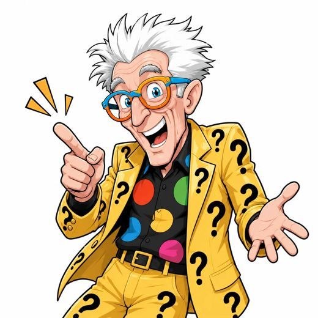
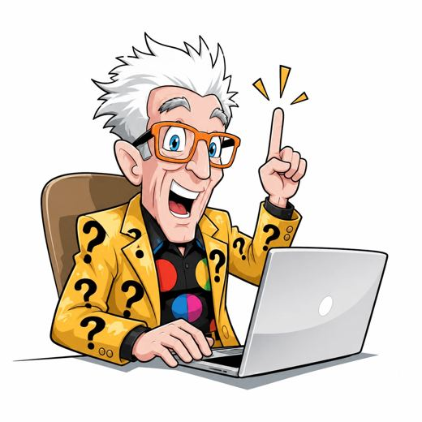
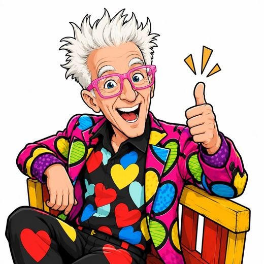

This is the Lesko Help brand system as it stands today. It is a working draft, not a finished manual — several sections are settled, several are explicitly open, and the open ones are marked so nobody mistakes a proposal for a decision.
Everything here was built from real evidence: the community itself, the existing Quick Guides, Matthew's own words, and the assets already in use. Where something was invented rather than found, it says so.
A section marked SETTLED can be used without asking. A section marked OPEN must not be treated as decided — ask first. Never invent a value for an open section.
| 01 | The story — villains, character, guide, promise | Settled |
| 02 | Voice — how we sound | Settled |
| 03 | Vocabulary — the names we use | Settled |
| 04 | The character — Matthew, and the rules for drawing him | Settled |
| 05 | The wardrobe — three costumes, five rules | Settled |
| 06 | Colour — eight colours, and the pairing question | Values settled · pairings OPEN |
| 07 | Typography — Anton and DM Sans | Proposed |
| 08 | Objects — the floating-object idea | OPEN |
| 09 | Asset specs — every community surface | Settled |
| 10 | Status — what is done, what is not | — |
A brand is a world people enter, not a look. Every design decision in this document is downstream of what follows.
Money that is legally yours, sitting behind forms, jargon, and the belief that it isn't for people like you. This is Matthew's own founding observation:
People who charge for what is free — including impersonators who pose as Matthew or his team to rob the members he is trying to help. This is not hypothetical: members of this community have lost real money to a fake "USAID Grant Administrator" and then been asked for thousands more.
Your subscription is all the money he will ever ask for.
The house on Friday. The car that keeps the job. The procedure Medicare won't cover. Not abstractions — the actual things members write about when they arrive.
Someone who has been told no so many times they have started saying it to themselves. The word they use about themselves is desperate. The word they are afraid of is stupid. Often older, often disabled, often caring for somebody else, frequently writing from a phone — and sometimes with no phone at all.
They write in fragments. Real posts, unedited: "How do I get money." · "I'm so confused on how to navigate." · "I need help finding any grant I can apply for before I give up."
Matthew Lesko. Eighty-two. Eccentric on purpose. Members call him Mr. Question Man — a name they gave him, not one he took. He is the only figure in this category who never asks for more money.
Asking. He does not write your grant for you — he teaches you to ask, which is what the question mark has meant all along. The costume was never a gimmick; it is the thesis.
Note what this promise is not. It is not "get rich". It is not a guaranteed amount. The emotional truth of a win, in this community, is not the size of the cheque — it is that somebody finally answered. Design and copy should feel like a hand raised, never like a sales page.
The brand's own phrases were not written by marketing. They grew in the community, and members repeat them to each other unprompted. Use these; do not invent replacements.
These names were found in use, not invented. Use them exactly.
| 1 | Daily Welcome Tour |
| 2 | Call Sheet Classes |
| 3 | AI Grant Researcher |
| 4 | Questions Channel |
| 5 | Application Classes |
| 6 | Group Coaching |
| 7 | Ask Matthew Live |
The roadmap is the spine of the member journey. It should look identical everywhere it appears — in the community, in a guide, in an email — so that a member who can barely read still recognises where they are.
| Navigators | Member guides who run live sessions. Stipended. |
| LeskoHelpers | What members call themselves |
| Mr. Question Man | Matthew. Member-given, and worth protecting. |
| Quick Guide Library | The printable resource guides |
| Success Stories | Where wins are posted |
| Safety Warnings | Scam alerts |
| We Care | — |
| Thursday Drop-In Clinic | Weekly open session |
| Lesko Pro | The business hub |
| My Grant Buddy | The member-facing AI companion |
Matthew is the brand's guide, and the illustrated version of him is its most valuable asset — because it is the one thing an impersonator cannot copy.



The canonical reference stills. Every new image descends from one of these.
| Form | Where it is used | Why |
|---|---|---|
| Illustrated Matthew | The guide inside the product — roadmap steps, guides, thumbnails, teaching, wayfinding | Ownable, reproducible, accessible, impossible to counterfeit |
| Real photo and video | Proof of a living person — live sessions, testimonials, "this is really him" | Authenticity and warmth |
| AI-generated photoreal | Never | It is precisely what the impersonators produce |
That last row is a hard rule, not a preference. In a category whose live enemy is people faking Matthew to rob members, publishing convincing fake photographs of him is the wrong instinct — it is the scammer's own register.
Full detail lives in the repository. Three rules cause every failure when broken:
Wild hair and a big open laugh are not the problem. Unsmiling eyes are. A wide-open mouth with flat, staring eyes reads as menacing. The same open mouth with crinkled eye corners, lifted cheeks and raised brows reads as charming. Keep every energetic trait and specify the eyes.
Matthew is tall and lean — drawn at roughly eight heads, with legs slightly more than half his height and a small head relative to the body. He is never short, stocky or big-headed.
Full-body poses need a 2:3 portrait frame. A wide pose in a square frame forces the figure to be scaled down to fit, and short legs are the result regardless of how the proportions are worded. Square is only for chest-up crops — which is what the original stills are, and why they never had this problem.
Each costume is a signal, not decoration — so the right Matthew carries the right message before a word is read.
| Costume | Shirt | Job |
|---|---|---|
| Yellow, black question marks | Black, multicoloured polka dots | Welcome & everyday. The signature. |
| Blue, white question marks | Black, multicoloured hearts | Teach & explain — roadmap, classes, guides |
| Green, yellow question marks | Black, multicoloured polka dots | Celebrate — Success Stories, wins |
Hearts under the teaching suit are deliberate: teaching is the caring act in this brand. He doesn't lecture, he helps.
Each of these was learned from an image that was rejected.
| Orange | He wears it in real photographs, but orange sits between yellow (attention) and red (danger) — the two most safety-critical signals the brand owns — and would blur exactly the distinction that must never blur. |
| The multicoloured confetti suit | A real garment and a good one, but its print is an intricate irregular photographic pattern that flat comic style cannot reconstruct from a written description. It would need a photograph of the actual suit as a second reference image. |
| A dedicated Protect costume | Attempted in dark navy and in red; both rejected. The dark version also dropped his laugh, which made him read as cold. |
There is still no costume for scam warnings and safety — and it may be the wrong question. A warning might be better served by yellow Matthew beside a red warning graphic than by dressing him for bad news. To decide deliberately, not by default.
Yellow is both his signature suit and the "pay attention" colour. If both, the signal weakens. The resolution: the yellow suit is identity, not signal. The attention role belongs to yellow surfaces — highlighter bars, callout blocks, ink on yellow. Suit and surface do different jobs.
The eight colours below are confirmed. How they pair — which colour goes on which — is not decided. An earlier draft proposed darkened values for text; those were not from your palette and have been withdrawn. This section states the measured facts and the three honest options, and nothing more.
Contrast ratios, measured rather than estimated. A ratio of 4.5:1 is the legal minimum for body text; 7:1 is the standard for an audience with reduced vision, which this one is.
| Colour | Against white | Can it carry body text on white? |
|---|---|---|
| Blue #3655b3 | 6.76 : 1 | Yes at 4.5, no at 7 |
| Purple #7c3bb0 | 6.75 : 1 | Yes at 4.5, no at 7 |
| Mid blue #0060ff | 5.10 : 1 | Yes at 4.5, no at 7 |
| Red #f93946 | 3.68 : 1 | No |
| Pink #ff24b1 | 3.42 : 1 | No |
| Green #2ca01c | 3.41 : 1 | No |
| Teal #00d6f6 | 1.76 : 1 | No |
| Yellow #fdcc0a | 1.52 : 1 | No |
This is not a fault in the palette. These colours are built to be seen, which is right for this brand. It only means a decision is needed about what happens when one of them has to carry words.
Near-black type on yellow is the strongest pairing the palette contains, and it is already in use in the medical-bills banner. It works on screen and in print, and it is the reason yellow should be treated as a surface rather than a text colour.
| Option | What it means | Cost |
|---|---|---|
| A · Never text on colour | The eight colours are fills, shapes and grounds only. All text is near-black on white, or near-black on yellow. | Strictest and cleanest. No new values at all. Limits headline treatments. |
| B · Darken where needed | Add a text-safe sibling of each colour, same hue, darkened until it clears the floor. | Adds values that are not in the current palette. This is what the earlier draft did without asking. |
| C · Accept 4.5 for large text | Keep the floor at 7:1 for body copy, but allow 4.5:1 for headline sizes, which lets blue, purple and mid blue carry large type. | More of the palette becomes usable, with a rule people have to remember. |
Nothing below the eight colours above is settled. The next working session decides this, and then the rest of the system inherits it.
Two families. Anton shouts, once. DM Sans does everything else. Both are free, both are on Google Fonts, and this document is set in them.
The scale above is a proposal, not a decision. It has been tested on a Quick Guide page and an article header but not signed off.
This came from the inspiration round and has not been approved. It is recorded here so the thinking is not lost.
The direction picked from references was large type with small objects floating around it, with lots of air. The condition attached to it: the objects must mean something in this community, not be generic startup confetti.
Eight objects were drawn, each naming something real in the member journey:
| The question mark | Asking — the whole practice |
| The heart | From the playing-card suits. Care. |
| The telephone | The call — who I called, and what they said |
| The envelope | The answer that arrives |
| The house | Housing, rent, the roof |
| The call sheet | Step 2 of the roadmap |
| The glasses | His. Nobody else's. |
| The key | The hidden door opens |
Proposed behaviour: flat fill, one brand colour each, bold black outline of even weight. Scattered with generous air, rotated a few degrees so they feel dropped rather than placed. Never more than six on a surface, never overlapping the type. They fill the air around the message; they never compete with it.
Also open: whether the question mark should be the universal system icon. In an earlier draft it was used for space logos, badges, callout markers, the banner pattern and the wordmark all at once, which was too much of one device.
Every branded surface in the community, with the size the platform requires. Taken from the Mighty Networks branding guide.
| Asset | Minimum size | Watch out for |
|---|---|---|
| Network logo | 500 × 500 | Corners are rounded on crop — keep padding |
| Primary image / video | 1920 × 1080 | Responsive; edges crop on other screens |
| Global header brand | 1155 × 245 | Sits on the header colour |
| Asset | Minimum size | Watch out for |
|---|---|---|
| Space logo | 500 × 500 | Rounded-square crop. Reads small in the sidebar. |
| Space branding image | 1155 × 245 | Replaces logo, name and tagline |
| Space banner — thin | 2880 × 150 | Colour and pattern only, not detail |
| Space banner — tall | 1560 × 334 | For imagery with recognisable content |
| Section | Image size |
|---|---|
| Heading | 1920 × 1080 |
| Full-width heading | 3840 × 2160 |
| Media | 2400 × 1350 |
| Media with text | 1200 × 675 |
| Story block | 560 × 560 |
| Double story blocks | 320 × 320 |
| Feature list icon | 80 × 80 |
| Bento box grid | 1920 × 1080 — uploaded through the Heading section |
| Asset | Minimum size | Text safe area |
|---|---|---|
| Event header | 1920 × 1080 | — |
| Event thumbnail | 280 × 280 | — |
| Course section / lesson | 1920 × 1080 | 2375 × 1185 |
| Featured plan image | 1600 × 900 | Renders large when shared |
| Article header | 2560 × 1440 | 2375 × 1185 |
| Video thumbnail | 1600 × 900 | 1300 × 600 |
| Profile photo | 500 × 500 | Circle crop |
| Cover photo | 1520 × 860 | Crops vertical on mobile |
| Badges | 256 × 256 | — |
| Value graphics | 288 × 288 | — |
An honest account of what is decided and what is not, so nothing gets used as though it were finished.
| The story | Both villains, the stakes, the main character, the guide, the practice, the promise, and the counter-line to the impersonators |
| Voice | The harvested phrases, how to write, and the never-do list |
| Vocabulary | The seven roadmap steps and the proper nouns |
| The character | Three forms and their jobs, the generation rules, proportions and framing |
| The wardrobe | Three costumes, five rules, and what was tried and rejected |
| Colour values | The eight hex codes and their measured contrast |
| Asset specs | Every community surface and its required size |
| Colour pairings | Which colour goes on which, and how text is handled on colours that cannot carry it. Three options are on the table; none is chosen. This is the next decision. |
| Typography | The scale is proposed and tested but not signed off |
| Objects | Exploration only. Eight objects drawn, behaviour proposed, nothing approved. |
| The question mark as system icon | Over-used in an earlier draft. Needs a deliberate limit. |
| The wordmark | A LESKO?HELP lockup was drawn from the existing Quick Guide masthead but never confirmed |
| A Protect costume | Two attempts rejected. May be the wrong question. |
| Layout & components | Grid, spacing scale and the component set are drafted on canvas but not settled |
Recorded because it cost time and should not cost it again:
| .claude/skills/brand-system/ | The method — how a brand system is built and applied. Identical in every client repository. |
| .claude/skills/lesko-brand/ | This brand's answers, machine-readable. Loads automatically in any session. |
| brand/tokens.css | Colour values |
| brand/ASSET-SPECS.md | Community surface sizes |
| brand/character/ | Reference stills, the generation recipe, the wardrobe |
| design/ | Canvas sources |
| documents/ | This document |
Decide the colour pairings. Everything else in the visual system inherits that decision, which is why it comes first.